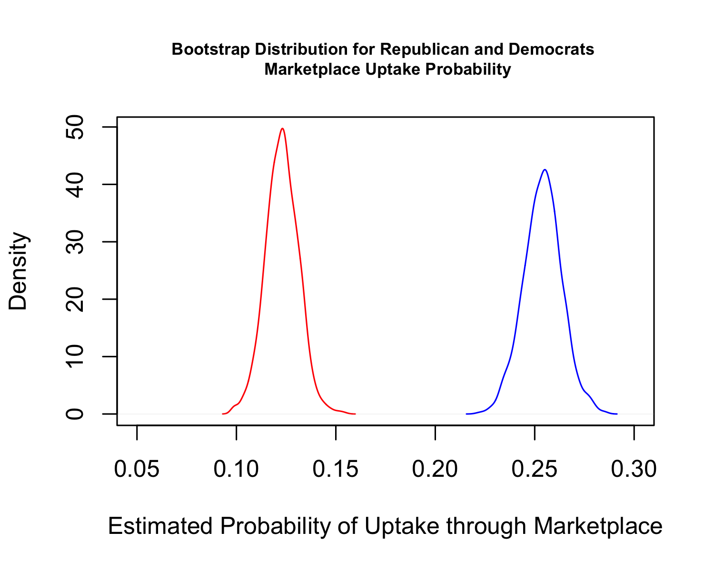

9.5 Week 7 Tutorial
For this exercise, we will use data from Amy Lerman, Meredith Sadin, and Samuel Trachtman’s 2017 article in the American Political Science Review, “Policy Uptake as Political Behavior: Evidence from the Affordable Care Act.”
Abstract. Partisanship is a primary predictor of attitudes toward public policy. However, we do not yet know whether party similarly plays a role in shaping public policy behavior, such as whether to apply for government benefits or take advantage of public services. While existing research has identified numerous factors that increase policy uptake, the role of politics has been almost entirely overlooked. In this paper, we examine the case of the Affordable Care Act to assess whether policy uptake is not only about information and incentives; but also about politics. Using longitudinal data, we find that Republicans have been less likely than Democrats to enroll in an insurance plan through state or federal exchanges, all else equal. Employing a large-scale field experiment, we then show that de-emphasizing the role of government (and highlighting the market’s role) can close this partisan gap.
In a portion of their analysis, they use survey data to assess the relationship between partisanship and insurance uptake through the ACA marketplaces. The researchers’ hypothesis is:
First, we expect that partisanship will be a strong predictor of policy behavior. In the case of the ACA, we anticipate that Republicans—who on average are much less supportive of the health insurance reform and are generally more resistant to government intervention in the private market—will be less likely than Democrats to take advantage of health insurance options provided by the ACA.
Key variables include
ins: insurance status, 1=“uninsured”, 3= “marketplace”, 4= “private”republican: 1= Republican, 0= Democratage2: numeric variable for ageed: education level of respondentracethn: race/ethnicity of respondentincome2: categorical income of respondentsex: sex of respondentstate: respondent’s state of residence (coded as a FIPs code)empl2: respondent’s employment statusdate: date of the survey poll
Let’s load the data and look at the outcome ins.
library(foreign)
library(nnet) # install this package
lst <- read.dta("https://github.com/ktmccabe/teachingdata/blob/main/lst.dta?raw=true")table(lst$ins)
1 3 4
2100 724 904 Let’s assess the research question.
- Our goal is to understand the relationship between party identification and uptake of ACA marketplace insurance. What are the possible ways we could model this relationship given our outcome data?
- Let’s suppose we decided to go with the multinomial logistic regression.
- What
class()should our outcome variable be? - What would make sense to use as a baseline category?
- What
Go ahead and recode the variable as necessary.
Even if your variable is a factor, I would recommend giving it informative labels instead of numbers so that it is easier to interpret the regression outcome.
class(lst$ins)[1] "numeric"lst$ins <- as.factor(ifelse(lst$ins == 1, "uninsured",
ifelse(lst$ins == 3, "marketplace",
ifelse(lst$ins == 4, "private", NA))))
lst$ins <- relevel(lst$ins, ref = "marketplace")Let’s conduct a multinomial logistic regression of the following form:
\[\begin{align*} \log \frac{ \pi_{j}}{ \pi_{J}} &= \alpha_{j} + Republican_i\beta_{1j} + \\ & age2_i \beta_{2j} + ed_i\boldsymbol{ \beta_{kj}} \\ & + racethn_i \boldsymbol{ \beta_{kj}} + income2_i\boldsymbol{ \beta_{kj}} \\ & + sex_i\boldsymbol{ \beta_{kj}} + empl2_i\boldsymbol{ \beta_{kj}} \end{align*}\]
where all covariates are treated as factor variables. Note that the \(k\)’s are just a placeholder for the coeffcient numbers. For factor variables with several categories, you will end up with several \(k\) coefficients for each variable (e.g., one for racethn = Asian, one for racethn = Black, etc.)
Run the model.
fit <- multinom(as.factor(ins) ~ republican + age2 + factor(ed)
+ factor(racethn) + factor(income2)
+ as.factor(sex)
+ as.factor(empl2), data = lst)# weights: 60 (38 variable)
initial value 4095.626612
iter 10 value 3475.264179
iter 20 value 3122.816006
iter 30 value 3067.172420
iter 40 value 3059.543787
final value 3059.470322
convergedLet’s consider our assumptions.
- What is a key assumption of the multinomial logistic regression model?
- How could it potentially be violated in the authors’ case?
Expand for one example.
The key assumption is the IIA assumption. The authors consider potential violations to this assumption in footnote 4. “Consistent estimation using the multinomial logistic model relies on the Independence of Irrelevant Alternatives (IIA) assumption, which requires that the choice of one of the available options does not depend on whether some alternative option is present. While this assumption is hard to test (Allison 2012), there is some evidence that it could be violated in this case, with the presence of the”uninsured" option affecting the distribution of choices across private and marketplace insurance. Thus, as a robustness check, we also estimate a model in which we first analyze the decision to insure (for the study population), and second, conditional on having insurance, analyze the private versus marketplace choice."
Let’s assume we are okay with our assumptions. Let’s now try to use the model to evaluate the research hypothesis.
- First, we should get comfortable extracting coefficients from multinomial output.
- Extract the coefficients on the Republican covariate and their standard errors
- Calculate z-scores and p-values
- Assess the statistical significance
- Provide an initial evaluation of the authors’ research hypothesis
Note that coef(fit) is now a matrix of output. We want to extract the republican column.
repcoef <- coef(fit)[, "republican"]
repse <- summary(fit)$standard.errors[, "republican"]
## Calculate z-scores
rep.zs <- repcoef/repse
rep.ps <- 2*(pnorm(abs(rep.zs), lower.tail = F))
round(cbind(repcoef, rep.zs, rep.ps), digits=3) repcoef rep.zs rep.ps
private 0.942 8.368 0
uninsured 0.966 9.044 0Let’s now transform these into quantities of interest that closely evaluate the research question.
- What quantity of interest should we estimate?
- Compute the quantity of interest
- Compute uncertainty
- Consider ways to visualize the results
Quantity of Interest calculation.
Let’s calculate the average difference in predicted probability of signing up for marketplace insurance for Republicans vs. Democrats, holding covariates at observed values.
Recall from above that the probability of \(Y_i\) being in a particular category is:
\[\begin{align*} Pr(Y_i = C_j |X) &= \frac{\exp(\mathbf x_i^T\beta_j)}{1 + \sum_{j=1}^{J-1} \exp(\mathbf x_i^T\beta_j)} \end{align*}\]
Recall that marketplace insurance is the baseline category. So this means our formula is
\[\begin{align*} Pr(Y_i = Marketplace | X) &= \frac{1}{1 + \sum_{j=1}^{J-1} \exp(\mathbf x_i^T\beta_j)} \end{align*}\]
## Point estimates
Xrep <- model.matrix(fit)
Xrep[, "republican"] <- 1
Xdem <- model.matrix(fit)
Xdem[, "republican"] <- 0
## Extract all coefficients
B <- t(coef(fit))
Bprivate <- coef(fit)[1, ]
Buninsured <- coef(fit)[2, ]
## Approach one
repmarket.p <- mean(1 / (1 + exp(Xrep %*% Bprivate) + exp(Xrep %*% Buninsured)))
demmarket.p <- mean(1 / (1 + exp(Xdem %*% Bprivate) + exp(Xdem %*% Buninsured)))
diffmarket.p <- repmarket.p- demmarket.p
## Approach two (easier when you have a lot of outcome categories)
repmarket.p <- mean(1 / (1 + rowSums(exp(Xrep %*% B))))
demmarket.p <- mean(1 / (1 + rowSums(exp(Xdem %*% B))))
diffmarket.p <- repmarket.p - demmarket.p
diffmarket.p [1] -0.1313263## Approach three
library(margins)
marg.effect.market <- margins(fit, variables="republican", change=c(0, 1),
vce= "bootstrap", category="marketplace")
summary(marg.effect.market)Uncertainty calculation.
We can use the simulation or bootstrap approach like before to calculate uncertainty. We will use the bootstrap because the syntax for the simulation approach is more complicated because our coefficients are in a matrix. The package Zelig has this capability. Simulation can be more faster given the multinomial model takes a moment to run.
## Bootstrap
myboot <- function(df){
wrows <- sample(1:nrow(df), size=nrow(df), replace = T)
subdata <- df[wrows, ]
fit.boot <- multinom(as.factor(ins) ~ republican + age2 + factor(ed)
+ factor(racethn) + factor(income2)
+ as.factor(sex)
+ as.factor(empl2), data = subdata)
## Point estimates
Xrep <- model.matrix(fit.boot)
Xrep[, "republican"] <- 1
Xdem <- model.matrix(fit.boot)
Xdem[, "republican"] <- 0
## Extract all coefficients
B <- t(coef(fit.boot))
Bprivate <- coef(fit.boot)[1, ]
Buninsured <- coef(fit.boot)[2, ]
## Approach one
repmarket.p <- mean(1 / (1 + exp(Xrep %*% Bprivate) + exp(Xrep %*% Buninsured)))
demmarket.p <- mean(1 / (1 + exp(Xdem %*% Bprivate) + exp(Xdem %*% Buninsured)))
diffmarket.p.boot <- repmarket.p- demmarket.p
return(cbind(repmarket.p, demmarket.p, diffmarket.p.boot))
}
myboot.ests <- do.call("rbind", replicate(1000, myboot(lst), simplify = F))
## Confidence intervals around the difference
cis.diff <- quantile(myboot.ests[, "diffmarket.p.boot"], c(0.025, 0.975))
cis.diff
## Visualize the two distributions
png("images/boostrappid.png", res=300, width=5, height=4, units="in")
plot(density(myboot.ests[, "repmarket.p"]), col="red",
main = "Bootstrap Distribution for Republican and Democrats \n Marketplace Uptake Probability",
cex.main = .7,
xlim = c(0.05, .3),
xlab="Estimated Probability of Uptake through Marketplace")
points(density(myboot.ests[, "demmarket.p"]), col="blue", type="l")
dev.off()